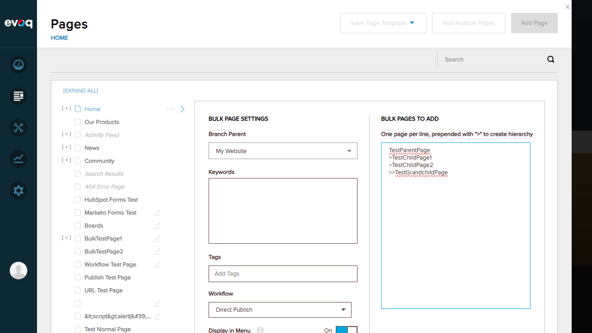
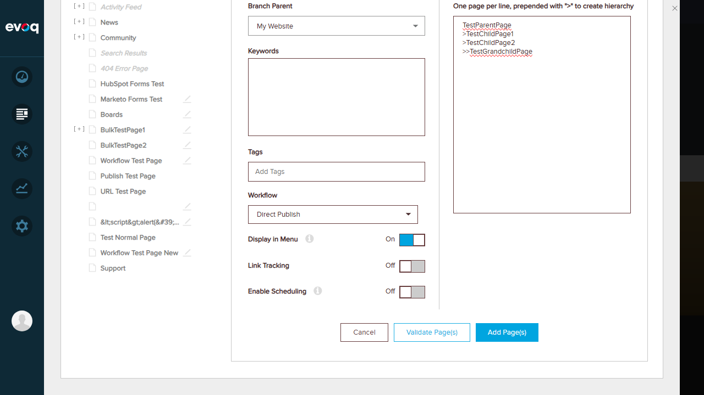
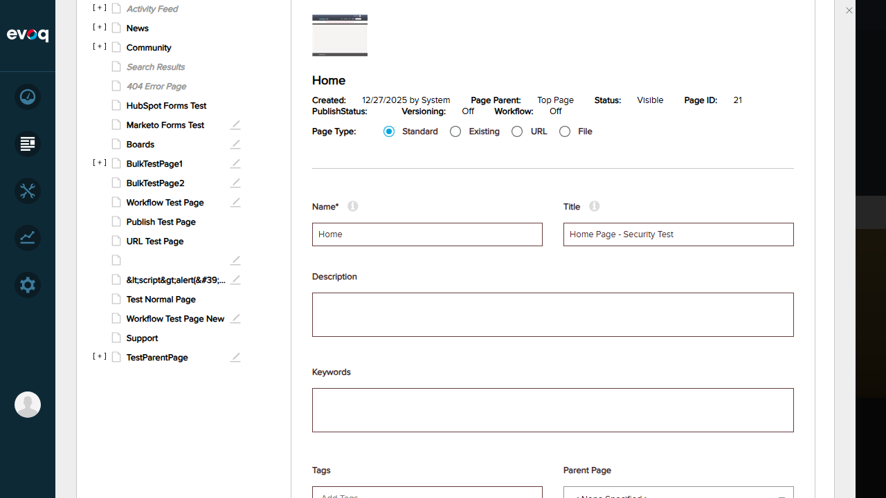
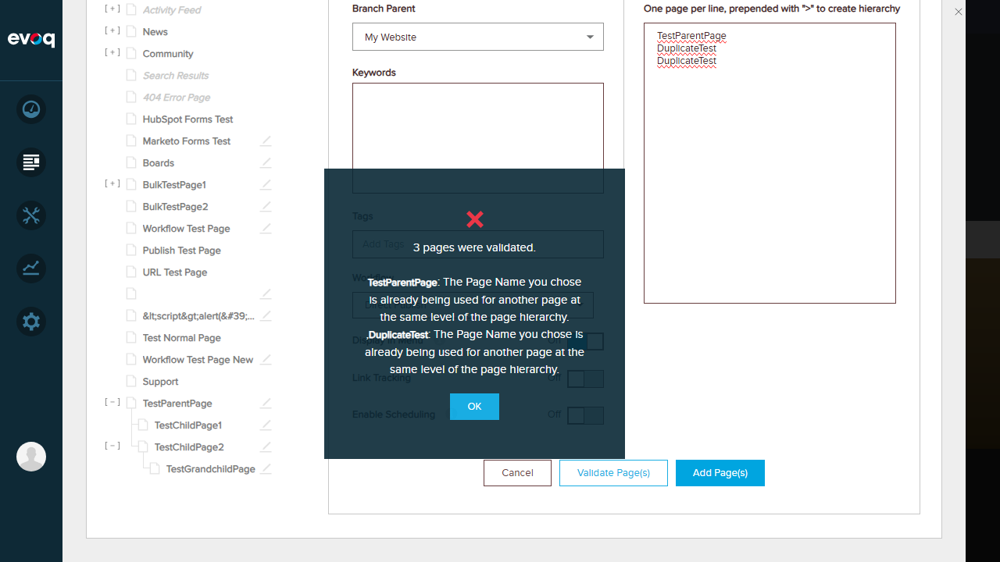
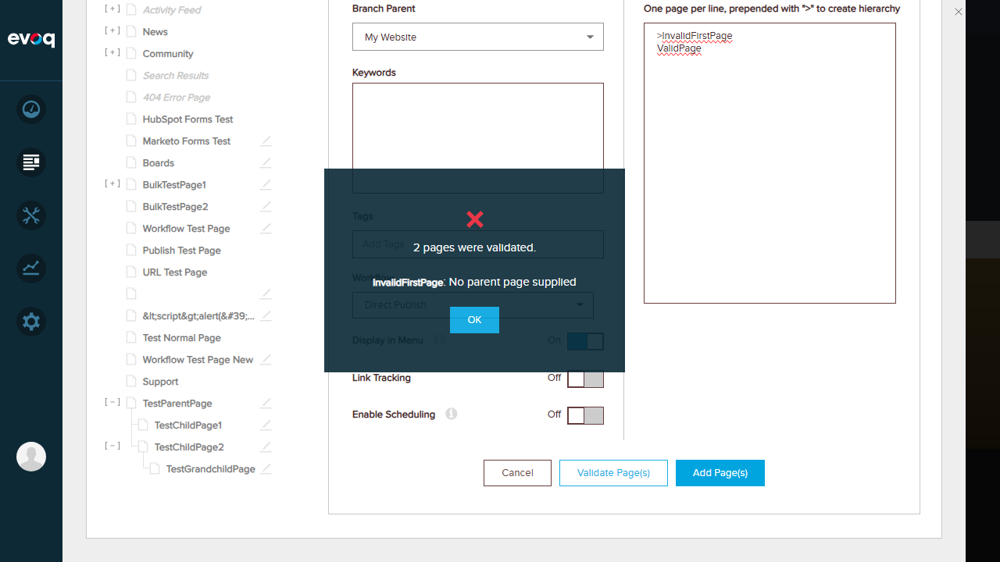
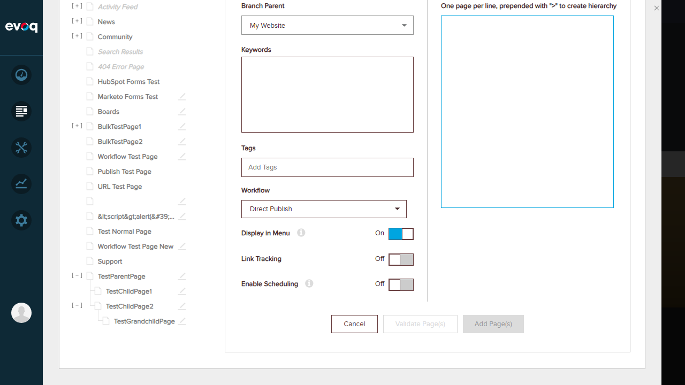
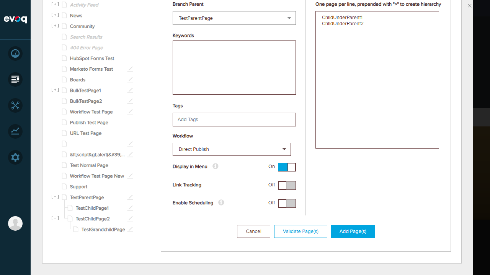
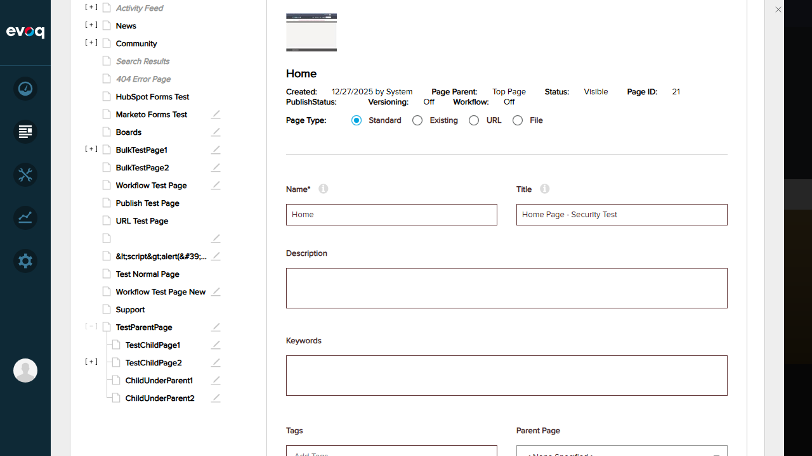

Create multiple pages at once with validation and batch processing
Priority
High
UI Location
Admin > Content > Pages > Add Multiple Pages
Test Date
January 6, 2026
Tested By
Claude Code (Automated Testing)
Test Summary
Test Scenario
Status
1. Validate bulk pages before creation
PASS
2. Create multiple pages successfully
PASS
3. Duplicate page name handling
PASS
4. Validation errors (hierarchy, empty inputs)
PASS
5. Parent page assignment
PASS
Overall Result: 5/5 tests PASSED
Test 1: Validate Bulk Pages Before Creation
Status:PASS
Description
Verify that the system can validate bulk pages before actual creation to check for errors.
Steps
Navigate to Content > Pages
Click "Add Multiple Pages" button
Enter page names with hierarchy using ">" prefix:
TestParentPage
>TestChildPage1
>TestChildPage2
>>TestGrandchildPage
Click "Validate Page(s)" button
Expected Result
System validates all pages and shows success message with page count.
Actual Result
System displayed "4 pages were validated" success message.
Screenshots
Add Multiple Pages dialog with bulk page settings

Page names entered with hierarchy notation

Validation success: "4 pages were validated"
Test 2: Create Multiple Pages Successfully
Status:PASS
Description
Verify that the system can create multiple pages at once with proper hierarchy.
Steps
After successful validation, click "Add Page(s)" button
Wait for creation to complete
Verify pages are created in the page tree
Expand parent page to verify hierarchy
Expected Result
All pages are created with correct parent-child relationships.
Actual Result
System displayed "4 of 4 pages were created" success message. Page hierarchy was verified: TestParentPage contains TestChildPage1, TestChildPage2 (with TestGrandchildPage as grandchild).
Screenshots

Success: "4 of 4 pages were created"
Page hierarchy verified in page tree
Test 3: Duplicate Page Name Handling
Status:PASS
Description
Verify that the system properly detects and reports duplicate page names, both for existing pages and within the same batch.
Steps
Open Add Multiple Pages dialog
Enter page names including:
TestParentPage (already exists)
DuplicateTest
DuplicateTest (batch duplicate)
Click "Validate Page(s)" button
Expected Result
System detects both the existing page conflict and the batch duplicate, showing appropriate error messages.
Actual Result
System displayed validation errors:
TestParentPage: "The Page Name you chose is already being used for another page at the same level of the page hierarchy."
DuplicateTest (second): Same duplicate error message
Screenshots

Duplicate page name validation errors
Test 4: Validation Errors (Hierarchy and Empty Inputs)
Status:PASS
Description
Verify that the system properly validates hierarchy errors (first page starting with ">") and handles empty inputs.
Steps
Test hierarchy error:
Enter ">InvalidFirstPage" as first page (child without parent)
Enter "ValidPage" as second page
Click "Validate Page(s)"
Test empty input:
Clear the textarea completely
Observe button states
Expected Result
Hierarchy error should show "No parent page supplied" message. Empty input should disable Validate and Add buttons.
Actual Result
Hierarchy error: System displayed "InvalidFirstPage: No parent page supplied"
Empty input: Both "Validate Page(s)" and "Add Page(s)" buttons were correctly disabled
Screenshots

Hierarchy error: "No parent page supplied" when first page starts with ">"

Empty input: Buttons correctly disabled
Test 5: Parent Page Assignment
Status:PASS
Description
Verify that bulk pages can be created under a specific parent page using the Branch Parent dropdown.
Steps
Open Add Multiple Pages dialog
Change "Branch Parent" from "My Website" to "TestParentPage"
Enter page names:
ChildUnderParent1
ChildUnderParent2
Click "Add Page(s)"
Verify pages created under TestParentPage
Expected Result
Pages should be created as children of TestParentPage.
Actual Result
System displayed "2 of 2 pages were created" success. Both ChildUnderParent1 and ChildUnderParent2 were created under TestParentPage as verified in the page tree.
Screenshots

Branch Parent changed to "TestParentPage"
Success: "2 of 2 pages were created"

Pages verified under TestParentPage hierarchy
Observations
Evoq-specific features: The code shows Evoq extends the base BulkPage DTO with additional properties: TrackLinks (boolean) and WorkflowId (int). These were not explicitly tested as separate scenarios but are available in the UI.
Workflow assignment: The "Workflow" dropdown in the bulk pages dialog allows setting workflow for all created pages. Default is "Direct Publish".
Link Tracking toggle: Available in the bulk page settings but was left at default "Off" during testing.
Maximum page limit: Not explicitly tested as a separate scenario. The code does not appear to have a hardcoded maximum limit visible in the UI.
Different page types: Not tested - bulk creation appears to only support standard pages. Page type selection is not available in the Add Multiple Pages dialog.